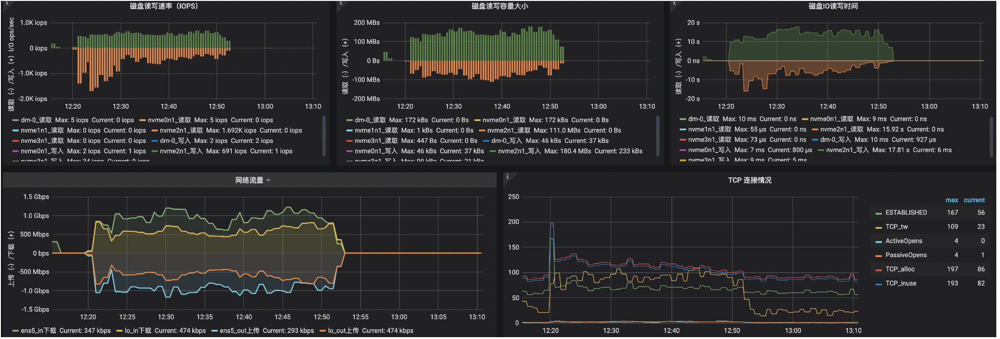

hbase迁移方案
1. 背景
之前构建于aws emr的hbase，长期无人维护，数据存储基于s3， 业务反馈使用起来不是很稳定。
老集群情况：
- 节点： 1master + 3slave(4c16g) , region存储于s3
- 数据量: 1张表， 接近2亿key, qualifier数量不超过10个, 未开压缩，350G数据量。
要求：
- 迁移期间不影响业务读写
2. 方案
2.1 方案选择
-
方案1: 先扩容老集群，每个rs均匀管理少量region时，将snapshot传输到远程新集群。 由于传输数据有350G， 可以考虑现在本地集群通过镜像复制新表，开启压缩后，再传输。 由于压缩和传输需要消耗cpu和网络资源会对集群造成些影响。
-
- 优点：数据传输量小，稳定性有保证。
- 缺点：迁移期间对业务有些影响
-
方案2: 基于aws emr创建只读hbase， 通过hbase 只读实例传输数据到远程新集群。
-
- 优点：对老集群没影响
- 缺点：无法压缩需要传输大量数据
-
方案3: 基于方案2的方案，通过scan方式写入新集群。
-
- 优点: 可控性强
- 缺点: 对老集群有影响；需要开发；周期长
综合考虑后，决定采用 null。
2.2 方案实施
2.2.1 emr后台创建只读副本
2.2.2 业务主集群创建快照
2.2.3 从只读副本迁移数据到新集群
- 只读集群做下同步:
- 开始迁移:
由于是只读副本，配置可以放肆一些，带宽、cpu啥的都可以打满使用。
其中, hdfs://xxxxx:8020/apps/hbase/data为新集群的路径。
2.2.4 新集群数据整理
-
载入snapshot
-
其他优化修改（按需）
- 添加压缩
- 添加bloomfilter
- 优化(合并/分割)分区
-
来此大合并（按需）
-
清理冗余的snapshot(按需)
2.2.5 相关监控
新集群3台机器8c32g + 600g(ssd/gp2), 迁移快照期间网卡、磁盘都被打满。
350G数据，大概1小时传输完毕。
添加压缩 + major compact持续1小时。
总共2小时完成迁移。
